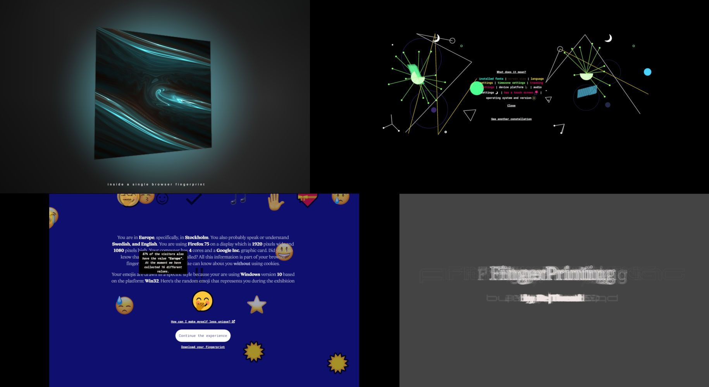
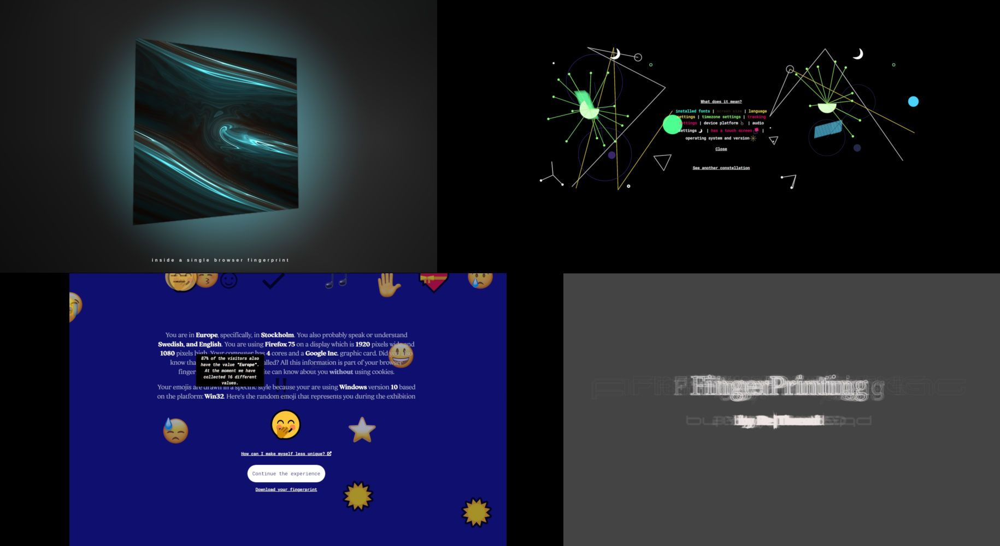

software + art
re|thread is a collective of software researchers, artists, and designers, in Stockholm (Sweden). Our work lies at the intersection between software technology, art, interaction design, sonification, and visualization, and focuses on the use of software as the material and medium for artistic creation. Our work is fueled by the interest to explore the dynamic nature of software from multiple perspectives, addressing its many layers; from the sublimity and detail of each execution to the societal and political impact it has on our lives.
Through our work we aim to establish emotional and reflective bonds between citizens and the software that constantly surrounds us, transforming the way we experience software, and allowing for participation and collective imaginings of what software is and what we might want it to be. We see art as a means to explore these affective connections. Through artifacts and performances, we intend to cultivate curiosity of the scientific and technical aspects of software which appear to many as a “black box”. When presenting these obscure and perplexing concepts as open or shared and as aesthetically enchanting, knowledge about software can become accessible to citizens, allowing for informed decisions and more radically diverse systems of education and production.
Upcoming events
| When | What | Where |
|---|---|---|
| 2023-12-02 to 2023-12-10 | [re|in]verse, for Nobel Week Lights | Klara Mälarstrand, under Central Bron |
| 2024-09-28 to 2024-10-13 | myriad (open call, see below) | Värmeverket |
Links
Projects / experiments

![[re|in]verse](images/reinverse/reinverse_thumbnail.PNG)
[re|in]verse
[re|in]verse is a light, sound and water installation that reveals the extraordinary software layers involved in the core matrix operations that power the scientific work of Nobel laureates and their teams.
It was created for Nobel Week Lights, and in collaboration with Jaime Reyes.

sys|calls
sys|calls is an immersive installation and series of live performances exploring the sublime inner workings of software, made in collaboration with Jaime Reyes.

re|cord
re|cord is a concept album with selected pieces of sonified software and data from more that 3 years of practise by re|thread.
A re|lease party was held at Den Fantastiska Platsen on May the 4th (Star Wars Day), 2023.

un|fold
un|fold is a multidimensional light and sound sculpture, created for the historic Turbine Hall at the KTH Royal Institute of Technology, as part of the Nobel Week Lights 2022. It contrasts the simplicity of digital actions that can be used to explain complex chemical processes with the actual complexity and intricacies of the software traces that perform these actions.

cyber|glow at the Broms Palace
cyber|glow is an audiovisual interactive installation. It reveals the invisible and live software traces that operate an interactive game. cyber|glow enchants visitors with a large-scale multi-player quiz game tailored to the context where it is presented. Through particle system visualisations and a tactile sonification, cyber|glow reveals the intangible layers of code and data that run the game.

cyber|glow at Benny Fredrikssons torg
cyber|glow is a light installation, generated in real time based on the interactions of the visitors. It reveals the invisible and live software traces that operate an interactive game. cyber|glow enchants visitors with a large-scale multi-player game where they learn about Nobel discoveries. cyber|glow reveals the intangible layers of code and data that run the game, through a generative laser projection.

Browser Chance Music at KMH
BCM creates a space for a radically different relationship between user and software. Evanescent and imperceptible internet activity emanating from a smartphone is revealed through immersive sounds and visuals.
This project is a collaboration between the re|thread collective and Henrik Frisk, professor of music at KMH, and funded by NAVET.

Drift
This online exhition lets you discover the intricate strata of code and network that operate to deliver the content of a search. And Drift reveals how these strata continuously evolve, even behind what seems a very well known, stable, familiar web site.
RFC:675:08
RFC:675:08 is a visual installation at the intersection of science & art for the Nobel Week of Lights It is performed at the heart of Stockholm, on the Kungsgatan LED screen.
This artwork unveils the data transmitted from Stockholm to the world through the internetwork Transmission Control Program [TCP] and its interface to programs or citizens that require its services.
Pellow
Pellow is an interactive installation that reveals what happens under the hood of a browser when you visit web pages.
Browser Chance Music
BCM creates a space for a radically different relationship between user and software. Evanescent and imperceptible internet activity emanating from a smartphone is revealed through immersive sounds and visuals.
This project is a collaboration between the re|thread collective and Henrik Frisk, professor of music at KMH, and funded by NAVET.

softwear
A work in progress about the intersections between software and knitting: check out the Softwear blog

session x01 - browser fingerprinting
Online exhibition on browser fingerprinting. Are you unique on the internet? What’s left of you when you leave a web page? How entangled are you and your device? Is your browser in the artwork or is the artwork in your browser?

software in times of corona
A small gallery of visual responses to the question: "How is software shaping your experience during the covid-19 crisis?"

re|Traces of Search
The audiovisual software art installation ’re|Traces of Search’ probes human-software relationships by examining in detail a specific and situated action: searching on the web.

re|trash
A playful installation for children with old computer parts and generative sound and visuals.

re|quest
An ongoing collection of pieces exploring the software and data structures triggered when searching for a query on Google.com

ci-poetry
The interactive installation ci-poetry simulates the concept of collaborative coding or continuous integration (CI) through generative poetry creation. The installation has been designed for the specific context of R1, Sweden’s first reactor hall, now dismantled and used as a cultural venue. In the installation, a collective poem is composed and sonified by 12 “poets” who each contribute with a line of their own source poem.
ci art hackathon 2019
Passionate and creative software students, software developers, artists, designers and curious citizens participated in the first ever performance of software art based on continuous integration data. During this hackathon, 23 teams delved into the extraordinary activity that occurs in a continuous integration server through visual and sound representations.
Visit the hackathon archive here!- tangible interaction
- sound
- screen-based
- installation
re|thread in the world
un|fold
| 2023-08-16 | Meet the artists: re|thread on the Affordable Art Fair website |
| 2023-04-19 | Supported by the Affordable Art Fair Stockholm |
| 2023-04-19 | un|fold at KMH for Kulturnatt 2023 (in Swedish) |
| 2022-12-07 | E. Charpentier and J. Doudna visited un|fold in December 2022 |
| 2022-11-09 | un|fold: Making sense of software through emotions |
| 2022-11-09 | un|fold on the Nobel Week Lights website |
cyber|glow
| 2022-05-09 | cyber|glow @ Kulturnatt on the Institut Français website (in French) |
| 2021-12-01 | Interactive software art on the streets of Stockholm on the KTH website |
| 2021-12-05 | French National Radio Network (Radio France) (in French) |
| 2021-12-09 | A playful diptych at Nobel Week Lights 2021 |
RFC:675:08
| 2020-12-08 | Video presentation of RFC:675:08 prepared by the Nobel Prize Museum |
| 2020-12-08 | LinkedIn post from KTH |
| 2020-12-05 | RFC:675:08 on the Nobel Week Lights website |
| 2020-12-05 | On the KTH calendar |
| 2020-12-04 | About Nobel Week Lights in Le Petit Journal (in French) |
| 2020-11-30 | Featured in the Nobel Prize Museum Instagram account |
softwear
| 2020-11-17 | Software and textile art with Nadia Campo Woytuk |
Pellow
| 2020-10-28 | Video on the Tekniska Museet Facebook account |
| 2020-10-27 | Art Installation – Under the Hood of a Browser |
| 2020-10-26 | Pellow. Through the looking glass of web browsers. on CreativeApplications.Net (CAN) |
Browser Chance Music
| 2020-09-11 - 2020-09-12 | Browser Chance Music at the Visualia AV event |
re|Traces of Search
| 2020-07-06 - 2020-07-20 | re|Traces of Search at the DIS 2020 online library |
ci hackathon
| 2019-10-24 | In the KTH website (in Swedish) |
Visualia - September 2020
re|thread took part in the Visualia AV event organised by Nordic Audiovisual Artists (NAVA) 11-12 September 2020 with the Browser Chance Music project as a smaller and more intimate installation setup.


session x01 - browser fingerprinting online exhibition April 2020
On 22 April 2020 we opened the virtual doors to this online exhibition on browser fingerprinting. There was art, an emoji party and a chat where people could ask questions and share their experiences.
Read all about it on its project page.
Thank you to all who attended, chatted, downloaded the gift package and donated their fingerprints to the archive!

 

Fotografiska AV Meetup February 2020
We had such inspiring conversations with artists and scientists alike at the AV meetup organised at Fotografiska Studio Live. A big thanks to everyone who shared their thoughts and ideas on our work and their own!


Who we are
| Maria | Roni | Erik |
|---|---|---|

|

|

|
| Artist, information experience designer and researcher. | Software engineer, generative artist. | Artist, musician, audiovisual composer. |
| Nadia | Thomas | Jonathan |
|---|---|---|

|

|

|
| Artist, interaction designer and researcher. | Postdoc in Software Engineering. | Interaction designer and researcher. |
| Benoit | ||
|---|---|---|

|
||
| Professor in Software Technology. |